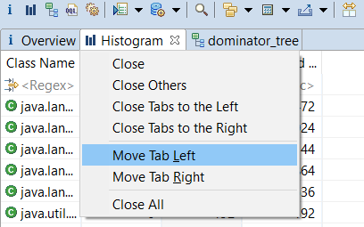
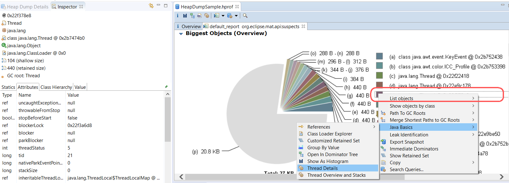

The following tips and tricks give some helpful ideas for increasing your productivity and ease the work with Memory Analyzer.
| Tip | Description |
|---|---|
| Shortcuts. Use command instead of ctrl on macOS |
ctrl+Q - Opens the Query Browser. ctrl+H - Opens the history of executed queries. ctrl+page-down - Next tab. ctrl+page-up - Previous tab. shift+F10 - Context menu for results of queries. ctrl+F10 - Context menu for editor tabs - to close and rearrange. ctrl+shift+P - Reset perspective. alt+I - Opens a pop-up menu that explains the icons. ctrl+shift+L - Opens a pop-up menu that explains the keyboard shortcuts. |
| Quick Search |
Just start to type while you are in the heap editor, all the
matches will be highlighted. This quick search starts is activated
when 3 or more letters are provided.
 |
| Filter |
To show only rows of a table or tree matching a filter,
click the top row, or press enter when the top row is selected.
Then type the required filter for the column. Multiple filters can be used.
In the example the "(1,909 filtered)" on the totals row means 1909 rows have been excluded by the filter.
For text columns a regular expression is used as a filter.
For numeric columns a numeric comparison is used as a filter.
Use one of the following:
 To move between columns of the filter row, click on the required cell, or once one cell is selected move to others with tab or shift+tab. Use esc to cancel or enter to finish modifying the filters, or click on another row to continue to work with the tree or table, or use ctrl+tab or command+tab to navigate another pane. tab or shift+tab will then revert to normal navigation. |
| Resize and reorder columns |
To resize or rearrange columns using the keyboard select a filter entry
for the column as above.
|
| Keyboard navigation of trees |
|
| Notes, Hyperlinks in Notes View |
Notes View recognizes and highlights object addresses. Activating
the hyperlink brings up a context menu which contains actions for
this particular object. Activate the hyperlink using the control key
and a mouse click (or command + click).
 |
| Undo/redo in Notes View, OQL Pane | There is undo/redo using ctrl+Z / ctrl+Y in the Notes View and the OQL Pane. The navigator pane can also be used to retrieve previous OQL statements. |
| Copy To Clipboard |
Use ctrl+C to copy the selection to the clipboard. The data will
keep its structure:
 |
| Manage the history of opened heap dumps |
Heap Dump History view offers a set of context menu actions to
manage the history of opened heap dumps:
 Delete Heap Dump action removes the heap dump from the history, but not from the file system. To find a heap dump in the file system use Explore in File System context menu action. Delete Index Files deletes the index files for a snapshot. The heap dump will be reparsed if reopened. This command could be useful to save disk space, or to reparse the heap dump with new options. |
| Manage editor tabs |
Right click on the Heap Editor tab will open a context menu to
manage the tabs. It might be very helpful when many tabs are open.
 Memory Analyzer 1.11 has the menu options
 |
| Link Inspector View with Heap Editor |
Object Inspector View shows the details for the single selected
object. The view updates itself with every change in the
selection. Sometimes it is interesting to compare two or more
objects or just to capture the view. To do so use
Link with Snapshot
context menu. The Inspector view will keep its data. To have
another Inspector view, open it via
 |
| Attribute tab in Inspector View |
The Object Inspector View shows the details for the single selected
object. The attribute tab shows the fields of an object or array elements
for an array.
|
| Value tab in Inspector View |
The Object Inspector View shows the details for the single selected
object. The value tab shows the value as given by the
name resolver extension point.
 |
| Image and Color objects |
The Object Inspector View
recreates Eclipse colors and images from the information in the heap dump and
displays the information in the lower left corner of the inspector.
|
| Class Hierarchy in Inspector |
The inspector now displays the full class hierarchy of any selected object.
One can drill-down via context menus.
 |
| Context menu for totals row |
The totals row now represents all the additional entries in a tree or table.
If the totals row is selected then the context menu will operate on all the unshown
entries in the tree or table. If all the rows are selected, for example using ctrl+A,
then the displayed rows are selected and the totals row is selected and then
the context menu will operate on all the entries in the tree and table.
Filtering operates as normal, and the rows excluded by the filter are not part of
the entries obtained by selecting the totals row.
 |
| OQL autocompletion |
The Object Query Language (OQL) pane has syntax highlighting for OQL
keywords. It also offers suggestions for class names for the
SELECT FROM clause, both simple class names and regular expressions.
The class name list is brought up on typing a dot '.'. ctrl+space
can also be used to bring up the list.
 The regular expression list appears on typing a double-quote '"'.  Autocompletion for SELECT and WHERE clauses can also supply field names. The class for the field names is selected in the FROM clause by typing space after the class name. This brings up a context information box, and selects that class as the active class for field names.  Suggestions are then provided in the SELECT or WHERE clauses on typing '.' or '@' or ctrl+space.  Attributes begin with '@' and the autocompletion is filtered based on what has been typed so far.  In SELECT and WHERE clauses there are also suggestions for methods on key Memory Analyzer objects representing contents of the snapshot.  Pressing enter adds the selected text to the command window.  |
| Links in Pie Chart Image |
Memory Analyzer 1.11 adds hot-spots to the pie chart.
The legend entries now link to the referenced object.
 |